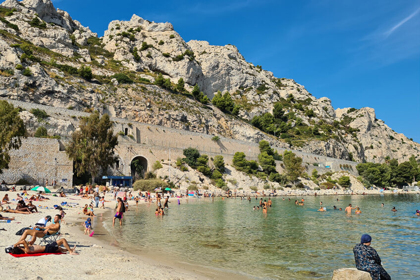
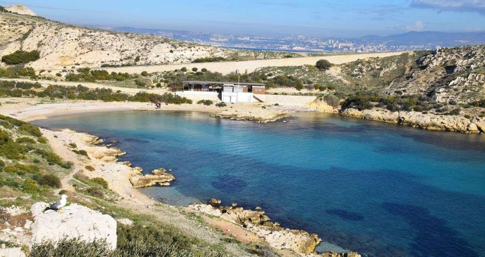
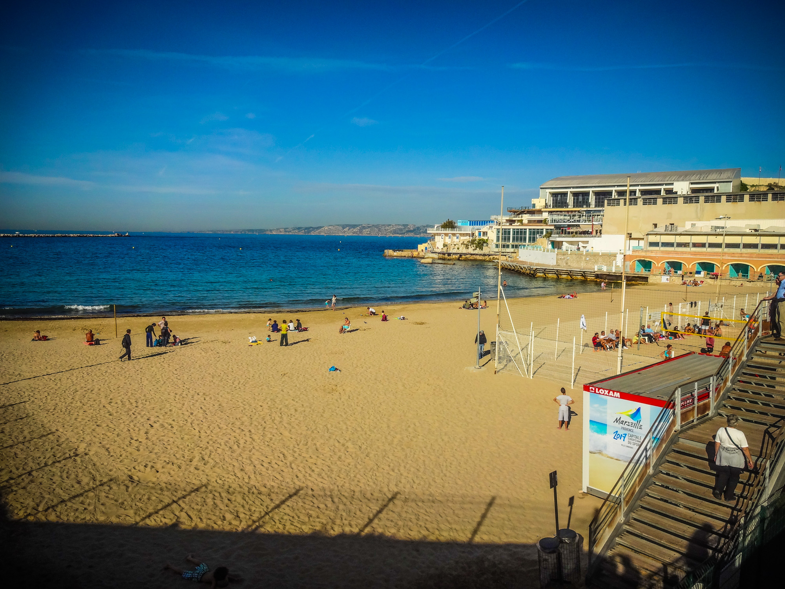
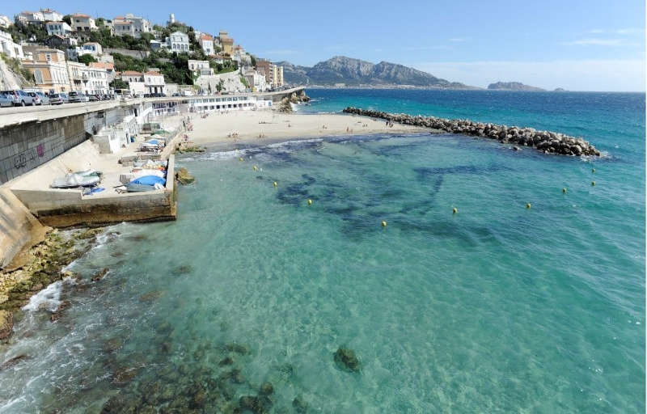
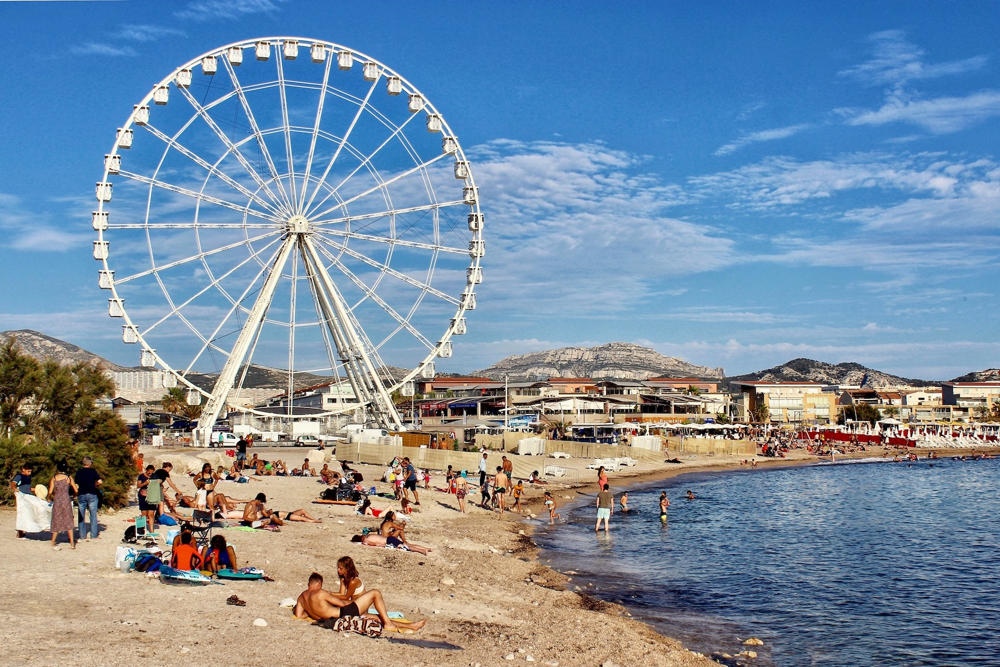
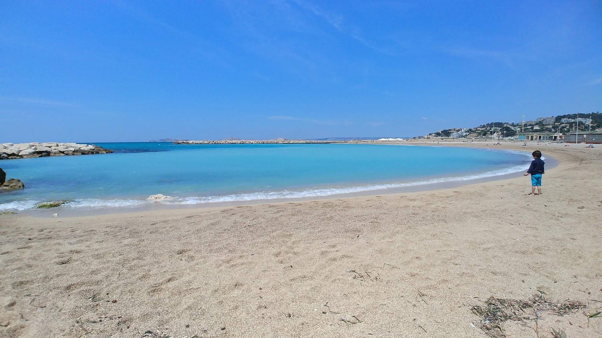
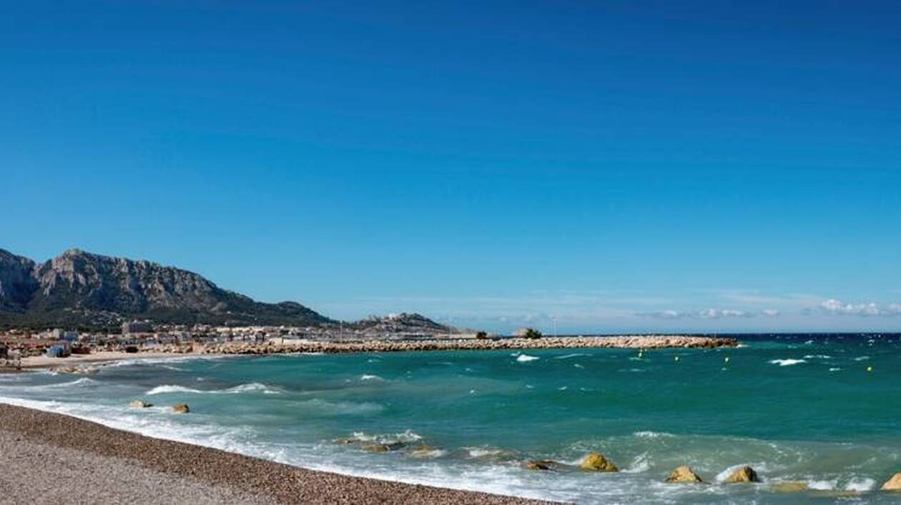
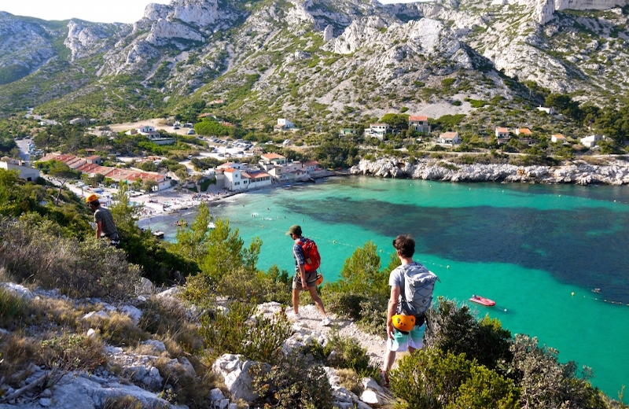

Les Plages de Marseille et ses alentours
Plages de Corbière
Au Nord du Vieux-Port, les très belles plages de Corbières sont les seuls espaces de baignade n'ayant pas été avalés par le développement du Grand Port Maritime.
Plage de la Calanque St Estève
A l'abri du mistral et surveillée, la plage de St Estève offre un excellent dépaysement et permet aux parents de laisser leurs enfants se délecter d'une eau claire, souvent chaude et dans laquelle ils ont pied pendant longtemps. La plage de Saint Estève au Frioul est bordée de sable et de gros cailloux, baignée d'une eau turquoise. Les restaurants sur les quais de Port Frioul, accessibles à pied ou en petit train, snack.
Plages de Catalans
C’est LA plage la plus accessible quand on se trouve dans le centre de Marseille. Ce n’est pas la plus belle, ni celle qui a l’eau la plus bleue, mais elle est à 15 minutes à pied du Vieux Port et est idéale pour aller piquer une tête à l’improviste. N’hésitez pas à dépasser les eaux et les foules stagnantes du bord pour profiter des eaux plus profondes, moins fréquentées et plus propres. La plage des Catalans est également connue pour ses terrains de Beach Volley qui attirent joueurs et spectateurs tout au long de l’année. Vous pourrez flâner en regardant les parties endiablées en vous asseyant sur les bancs situés plus haut.
Plage du Prophète
Sur la Corniche Kennedy, en contrebas de la route se trouve la plage du Prophète, l’une des plus anciennes plages de Marseille et l’une des plus populaires aussi. Littéralement prise d’assaut l’été venu, elle fait la joie des plus petits comme des plus grands.
Plage du Prado
Crées dans les années 70 pour aménager les kilomètres de littoral inexploités, les plages du Prado sont aujourd’hui devenues un lieu incontournable pour de nombreux marseillais et touristes. Les travaux du métro de l’époque produisant le remblais nécessaire à l’aménagement des 22 hectares pris sur la mer. Au final, le parc balnéaire du Prado s’étend sur 26 hectares et 3.5 kilomètres de littoral et est fréquenté par plus de 3,5 millions de visiteurs par an.
Plage de L'Huveaune
La plage de l'Huveaune, plus connue à Marseille sous le nom d'Epluchures Beach, se situe, comme beaucoup de plages, en plein coeur de la ville, tout près de la fameuse reproduction de la statue de David. C'est la seule plage de sable qui subsiste de l'ancienne configuration du littoral, avant la création des plages du Prado, de l'Escale Borely et de la Vieille Chapelle. Elle doit son nom au petit fleuve qui se jette juste à coté, l'Huveaune.
Plage de la Vieille-Chapelle
La dernière plage du Prado en venant du centre-ville (la plus au Sud par rapport à l’avenue du Prado) est la plage de la Vieille Chapelle. Située dans une petite anse agréable constituée de sale, galets et rochers à l’extrémité, on y trouve également de vastes pelouses, un grand skate park et une chenal de mise à l’eau pour les kitesurfeurs.
Plage de la Pointe Rouge
C’est la plus grande plage de Marseille, constituée de sable, elle est protégée des vents et reçoit un public familial populaire. En bordure se trouvent de nombreux restaurants, bars, pubs qui assurent le ravitaillement et l’ambiance. En été, la surveillance de la baignade est également assurée.

Calanques de Sormiou
Longue de 60 mètres, constituée de galets et de sable, c’est l’une des rares grandes plages des calanques. Elle accueille un public varié, familial comme sportif. Elle diffère ainsi des autres criques et petites anses que les Marseillais appellent “plagettes”. Les eaux cristallines des calanques sont généralement plus froides que celles des grandes plages de sables que l’on trouve dans la ville : la fraicheur est souvent due à une source d’eau douce souterraine qui s’y jette.
